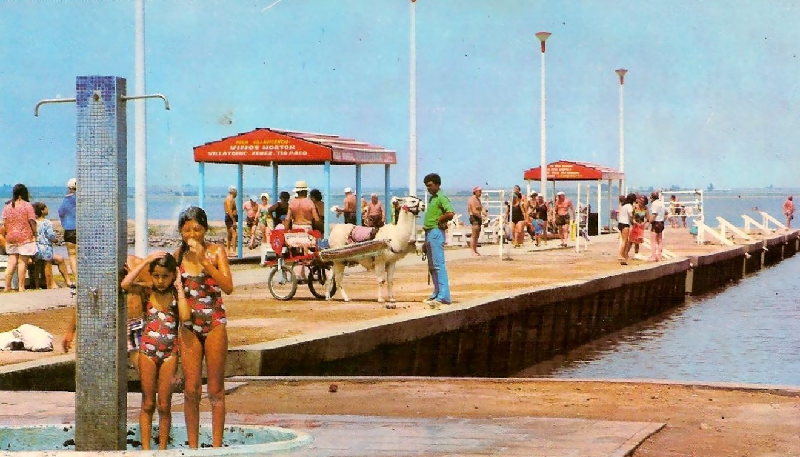

Villa Epecuén
Villa Epecuén es el nombre de un pueblo turístico argentino en ruinas, ubicado en el partido de Adolfo Alsina, provincia de Buenos Aires.
Se encuentra situada a 7,3 km de la ciudad de Carhué, fue fundada en 1821 a orillas del lago del mismo nombre, y llegó a tener cerca de 1.500 habitantes, siendo visitada por un promedio de 25 mil turistas durante el verano.
Sin embargo, sus años dorados, cuando era elegido por las familias más adineradas para vacacionar, devinieron en ruinas en cuestión de meses a causa de una gran inundación. Sus inmensas piletas de agua dulce, el gran punto de atracción, fueron a su vez su maldición: el terraplén de contención cedió y, el 10 de noviembre de 1985, el agua tapó al pueblo, obligando a que se evacuara casi toda su población. Posteriormente en los últimos años el agua comenzó a retirarse, dejando a la vista las ruinas de la ciudad, que se han convertido por sí mismas en un atractivo turístico.
La repentina destrucción de la ciudad, junto con sus ruinas, despertaron el interés de periodistas, antropólogos, fotógrafos y deportistas. Después de todo, Villa Epecuén no estaba totalmente deshabitada, ya que Pablo Novak, un vecino cuya familia estaba firmemente ligada a la ciudad mediante distintos emprendimientos, se negó a abandonarla y permaneció ahí como el único habitante.
Origen
Las aguas termales de la laguna Epecuén poseen un alto nivel de salinidad, similar al del Mar Muerto, lo cual generó un creciente interés turístico/medicinal hacia la zona.
El pueblo fue fundado por Arturo Vatteone el 23 de enero de 1921, con la inauguración del primer balneario sobre la laguna, a 7 km de Carhué. El lugar fue denominado "Mar de Epecuén" y comenzaron a lotearse tierras para conformar un pueblo.
Otro factor importante fue la confluencia de varias líneas ferroviarias en la zona.
El pueblo no dejó de expandirse desde entonces, desarrollando la infraestructura urbana e inaugurando hoteles, residencias de lujo e industrias explotadoras de sal y productos derivados.
Se generó una población estable, entre trabajadores y propietarios, de modo que hacia 1930 la ciudad ya contaba con todas las instituciones de un poblado permanente.
Hacia la década del '70 recibía 25 mil turistas durante la época veraniega, con 6 mil plazas hoteleras declaradas y 250 establecimientos comerciales. La población estable rondaba las 1.200 personas.
Inundación de Villa Epecuén
En 1975, el gobierno provincial construyó el canal Ameghino, una obra de ingeniería que conectaba varias cuencas y regulaba el caudal de agua en todas las lagunas de la región. Con este sistema ninguna se secaría y no había riesgo de inundación.
La idea era estabilizar el caudal irregular de la laguna, una característica natural e inherente a su condición, pero que causaba serios trastornos a la actividad turística. Los trabajos comienzan con la construcción de un canal recolector de agua, pero son abandonados a medio hacer con la llegada de la Dictadura Cívico Militar en 1976.
¿Cuándo ocurrió?
Todos los sucesos que tuvieron lugar en la Villa Epecuén comenzaron a tener lugar en el año 1980 con el surgimiento de fuertes lluvias, que amenazan con afectar al pueblo. La laguna que estaba cerca de este pueblo crecía 50 y 60 centímetros por año, amenazando con rebasar el terraplén defensivo de cuatro metros de altura sobre la costa, hecho con la intención de proteger al pueblo.
En el año 1985 la provincia de Buenos Aires pasaba por una de las peores inundaciones de su historia. Cuatro millones y medio de hectáreas habían quedado bajo el agua a causa del desborde del Río Salado.
Mientras ocurría una intensa crecida a inicios de noviembre de 1985, algunos vecinos del pueblo (entre ellos, los bomberos de la zona) comentaban que el muro que los separaba del lago podría caer. En paralelo, los funcionarios municipales y provinciales argumentaban que cualquier tipo de desborde no superaría los diez centímetros y el pueblo ubicado al suroeste de la Provincia de Buenos Aires se mantendría como uno de los principales centros de salud del país.
Sin embargo, para el 10 de noviembre de 1985, el terraplén cedió y los excedentes hídricos inundaron el pueblo, que tuvo que ser llamado para su evacuación inmediata. Todo el trabajo para la evacuación concluyó en 15 días y no hubo ninguna fatalidad, a pesar de que se tuvo que trasladar hasta los féretros del cementerio (la municipalidad los derivó a Carhué, a unos ocho kilómetros).
El agua de esta laguna fue aumentando lenta y paulatinamente, por lo que casi sus 1.500 residentes estables perdieron gran parte de sus pertenencias. No obstante, dos años más tarde esta primera inundación, se provocó otra en donde las ruinas quedaron bajo el agua durante dos décadas.
Llegando el año 1993 Villa Epecuén se encontraba a 7 metros bajo el agua.
¿Cómo se encuentra actualmente Villa Epecuén?
Hoy en día, el nivel del agua se la reducido casi por completo. Todavía se puede visualizar el trazado de las calles, el dique de contención y las ruinas de las casas, hoteles y edificios emblemáticos. Igualmente, hay un gran número de árboles muertos, edificios en ruinas y vehículos oxidados. Para el año 2012 eran pocas las cuadras que quedaban inundadas, si bien el pueblo continúa deshabitado y en ruinas.